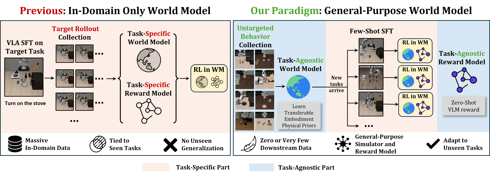
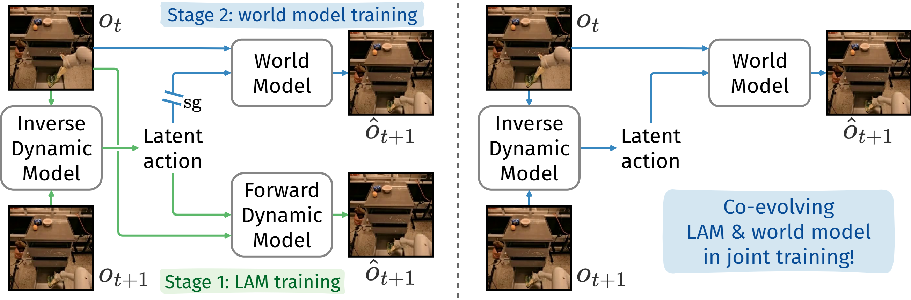
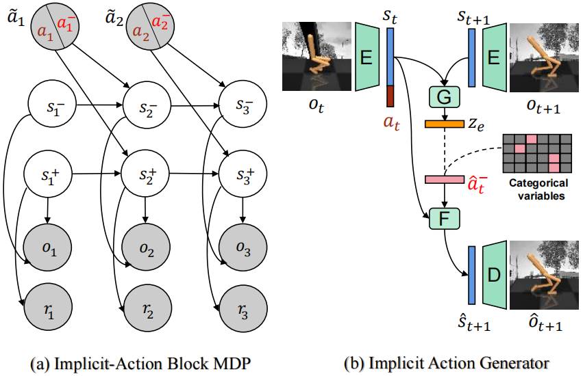
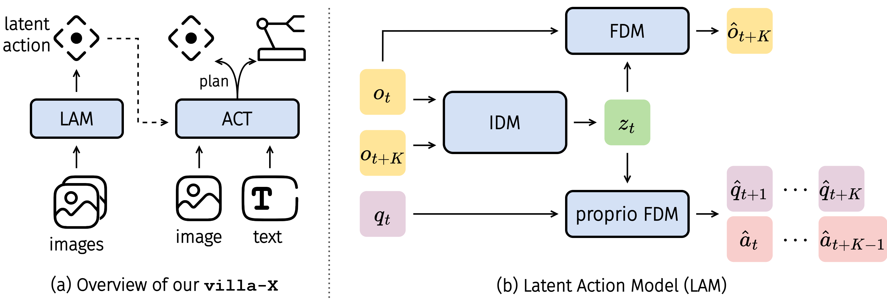
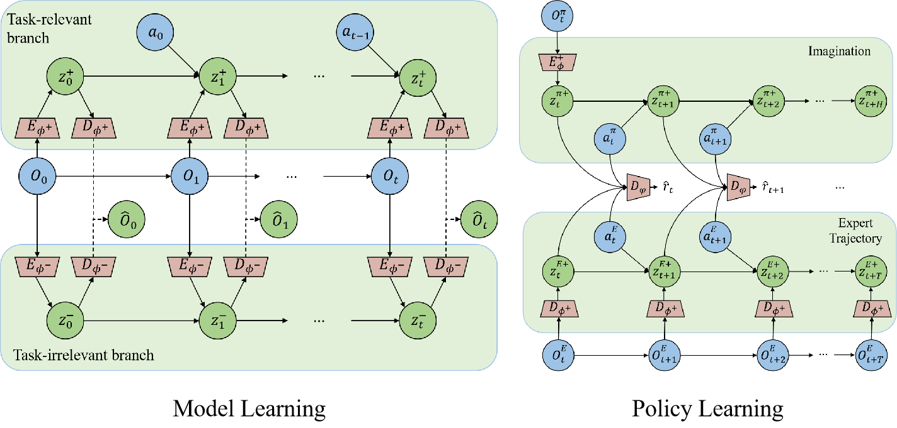

|
Yucen Wang
I am Yucen Wang (汪钰岑), a Ph.D. student in Computer Science and Technology at
Nanjing University, affiliated with the
LAMDA Group
led by Prof. Zhihua Zhou,
in the School of Artificial Intelligence,
advised by Prof. De-Chuan Zhan.
I received my M.Sc. from Nanjing University in 2023, also with LAMDA. njuwyc@gmail.com / wangyc@lamda.nju.edu.cn / WeChat ID: Plan2Explore |
Research InterestsMy long-term research direction focuses on building general-purpose embodied agents through foundation models, world models, and reinforcement learning.
My broader interests include model-based RL, representation learning in visual RL, latent action modeling and video generation models. |
Seeking OpportunitiesI expect to graduate in 2027. I am open to research collaborations, visiting or research internships, postdoctoral positions, and future full-time opportunities in academia or industry, around world models, reinforcement learning, and robot foundation models. Happy to connect and discuss potential opportunities. |
Publications |
|
|
 |
Reinforcing VLAs in Task-Agnostic World Models
Yucen Wang, Rui Yu, Fengming Zhang, Junjie Lu, Xinyao Qin, Tianxiang Zhang, Kaixin Wang, Li Zhao The Fortieth Annual Conference on Neural Information Processing Systems (NeurIPS 2026) ICML 2026 Workshop on RL from World Feedback paper Introduces Raw-Dream, a world-model-based VLA RL post-training paradigm that pairs a task-agnostic video world model trained on diverse untargeted behavior data with zero-shot VLM rewards, enabling unseen-task adaptation while mitigating world model hallucinations through initial-noise-based uncertainty filtering. |
|
 |
Co-Evolving Latent Action World Models
Yucen Wang, Fengming Zhang, De-Chuan Zhan, Li Zhao, Kaixin Wang, Jiang Bian Proceedings of the 43rd International Conference on Machine Learning (ICML 2026) paper / project page Introduces CoLA-World, which pioneers the joint training of latent action models and world models by directly repurposing a pretrained video generation model as the forward dynamics model, resolving representational collapse and enabling a synergistic co-evolution framework. |

|
FOUNDER: Grounding Foundation Models in World Models for Open-Ended Embodied Decision Making
Yucen Wang, Rui Yu, Shenghua Wan, Le Gan, De-Chuan Zhan Proceedings of the 42nd International Conference on Machine Learning (ICML 2025) paper / project page Grounds VLM semantic representations into a world-model latent space, using predicted temporal distances as intrinsic rewards for reward-free policy learning and multimodal goal conditioning through world model imagination. |
|
 |
AD3: Implicit Action is the Key for World Models to Distinguish the Diverse Visual Distractors
Yucen Wang*, Shenghua Wan*, Le Gan, Shuai Feng, De-Chuan Zhan Proceedings of the 41st International Conference on Machine Learning (ICML 2024) paper / project page Constructs an Implicit Action Generator to infer latent behaviors of visual distractors and train separated world models, allowing policy optimization in a clean latent space for visual control with complex task-irrelevant dynamics. |
|
 |
Villa-x: Enhancing Latent Action Modeling in Vision-Language-Action Models
Xiaoyu Chen, Hangxing Wei, Pushi Zhang, Chuheng Zhang, Kaixin Wang, Yanjiang Guo, Rushuai Yang, Yucen Wang, Xinquan Xiao, Li Zhao, Jianyu Chen, Jiang Bian Proceedings of the 14th International Conference on Learning Representations (ICLR 2026) paper / project page Develops a Vision-Language-Latent-Action framework that injects physically grounded latent actions into VLA training. |

|
Reward Models in Deep Reinforcement Learning: A Survey
Rui Yu, Shenghua Wan, Yucen Wang, Chen-Xiao Gao, Le Gan, Zongzhang Zhang, De-Chuan Zhan Proceedings of the 34th International Joint Conference on Artificial Intelligence (IJCAI 2025), Survey Track paper Systematically reviews reward modeling techniques in deep reinforcement learning, organizing methods by reward source, modeling mechanism, and learning paradigm. |
|
 |
SeMAIL: Eliminating Distractors in Visual Imitation via Separated Models
Shenghua Wan, Yucen Wang, Minghao Shao, Ruying Chen, De-Chuan Zhan Proceedings of the 40th International Conference on Machine Learning (ICML 2023) paper Learns separated environment dynamics by action-determined task relevance, reducing the effect of visual distractors on complex visual imitation tasks. |
ExperienceNVIDIA, machine learning intern on humanoid robotics, Isaac Loco-Manipulation team, starting from Aug. 2026. Microsoft Research Asia, Research Intern, Machine Learning Group, Apr. 2025 - May 2026. Worked on building action-conditioned world models from pretrained video foundation models, learning latent action models and latent-action-based world models, and RL post-training of VLA models in video world models. Nanjing University, M.Sc. and Ph.D. student in the LAMDA Group, School of Artificial Intelligence, 2020–present. Advised by Prof. De-Chuan Zhan, focusing on reinforcement learning and world models. I received my B.Sc. from the School of Information Management at Nanjing University in 2020. |
|
Website template adapted from Jon Barron. |